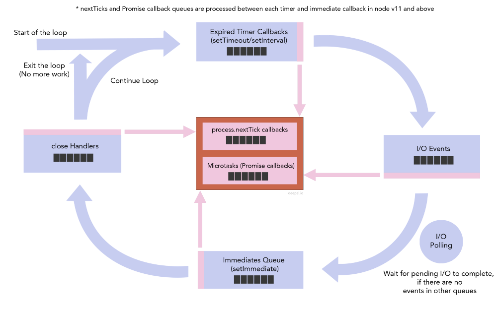

（译文）NodeJS 事件循环（二）- Timers, Immediates 和 Process.nextTick
原文地址：Timers, Immediates and Process.nextTick— NodeJS Event Loop Part 2, Deepal Jayasekara, May 11, 2017
上篇文章 （译文）NodeJS 事件循环（一）- 事件循环机制概述 中我讲述了 NodeJS 事件循环的总体图景。这篇文章中，我将详细讨论三个重要的队列：timers, immediates and process.nextTick 回调。
Next Tick Queue

Next tick 队列与其他 4 个主要队列分隔开，是因为它不是 libuv 原生提供的，而是 Node 自己实现的。
事件循环中要移动到一个阶段前（timers queue, IO events queue, immediates queue, close handlers queue 是 4 个主要的阶段），Node 会检查 nextTick 队列是否为空。如果不为空，Node 会一直处理该队列直到不为空。
Node v11 引入了一些变化，导致巨大的行为差异。详细介绍见: https://medium.com/@dpjayasekara/new-changes-to-timers-and-microtasks-from-node-v11-0-0-and-above-68d112743eb3
这引入了一个问题：通过 process.nextTick 递归或重复添加事件到 nextTick 队列会导致 I/O 和其他队列一直无法被处理。以下代码为例：
1 | const fs = require('fs'); |
你将看到输出中没有 ‘omg!…’， 全是 nextTick 回调的无限循环，而 setTimeout, setImmediate 和 fs.readFile 回调永远不会被调用
1 | started |
当你把 addNextTickRecurs 的入参设为有限值时，你将在 process.nextTick call 的末尾看到setTimeout, setImmediate 和 fs.readFile 的回调输出。
Node v0.12 之前, 有一个属性
process.maxTickDepth用于限制process.nextTick队列的长度。当它被手动设置后，Node 一次只会处理 next tick queue 中不多于maxTickDepth的回调。但这个属性在 Node v0.12 中被移除。因此，在更新版本的 Node 中，应避免重复添加事件到 next tick queue。
Timers queue
当你使用 setTimeout 或 setInterval 时，Node 将会添加计时器到 libuv 的计时器堆。事件循环中轮到计时器阶段时，Node 将会检查计时器堆中过期的计时器，并按它们设置的先后顺序依次调用它们的回调。
计时器并不能精确保证回调会在过期时间到时被执行。计时器回调的执行时机取决于操作系统（Node 必须在执行回调前检查计时器的过期时间，而这一过程会消耗一定的 CPU 时间）和事件循环中当前进程的表现。更准确地说，计时器保证的是回调不会在过期时间未到前被执行。我们可以用以下代码来模拟这种情况
1 | const start = process.hrtime(); |
上述代码在程序开始时设置一个过期时间为 1 秒的计时器，并打印到实际执行回调用了多长时间。如果你多次运行这段代码，你将注意到它每次都会打印不同的结果，并且永远不会打印 timeout callback executed after 1s and 0ms。你将看到类似下面的结果。
1 | timeout callback executed after 1s and 0.006058353ms |
这种时间过期的本质导致当 setTimeout 与 setImmediate 一起使用时会有意想不到的结果。我将在后面章节详细讲述。
Immediates Queue
虽然 immediates 队列和计时器过期的行为非常相似，但它有自己的特点。不像计时器我们无法保证它的回调什么时候被执行（即使把过期时间设为 0），immediates 队列保证了它会在事件循环的 I/O 阶段后立即被处理。通过 setImmediate 可以向 immediates 队列添加事件。
1 | setImmediate(() => { |
setTimeout vs setImmediate ?
让我们看看文章开头的事件循环图，你会看到当程序开始时 Node 从处理计时器队列开始，处理完 I/O 后再轮到 immediates 队列。根据图上的逻辑，我们可以推测以下代码的输出。
1 | setTimeout(function() { |
你会推测上面的代码总是会先打印 setTimeout 再打印 setImmediate，因为过期计时器队列比 immediates 先处理。但实际这段代码无法保证这样的输出结果。你多次运行这段代码，会得到不同的输出结果。
这是因为 NodeJS 为了对齐 Chrome’s timers cap，把最小过期时间定为 1ms。所以即使你把过期时间设为 0ms，会被覆盖为 1ms。
如果你想知道更多这一点上 Node 和不同浏览器的行为差异，请看 javascript-event-loop-vs-node-js-event-loop
每次新的事件循环开始时，NodeJS 通过系统调用获得当前时钟。根据 CPU 的繁忙情况，获取当前时钟的操作耗时可能不超过也可能超过 1ms。如果少于 1ms，NodeJS 将认为这个计时器还没过期，因为过期时间是 1ms，这时事件循环会移动到 I/O 阶段再到 immediates 队列，然后发现队列中有一个事件并进行处理，也就意味着 setImmediate 比 setTimeout 先执行。但如果耗时超过 1ms，计时器就会被认为已过期，执行顺序结果相反。
下面中代码保证了 immediate 一定会比计时器的先执行。
1 | const fs = require('fs'); |
让我们看看上述代码的执行流程
- 开始，程序异步读取文件，并提供一个处理文件读取完毕的回调。
- 事件循环开始
- 当文件读取完毕，执行回调作为一个事件添加到 I/O 队列
- 因为没有其他事件，Node 会一直等待 I/O 事件，然后发现 I/O 队列有一个事件，开始执行回调
- 执行回调过程中，一个计时器添加到计时器堆，一个 immediate 添加到 immediate 队列
- 现在事件循环正处在 I/O 阶段，因为没有要处理的 I/O 事件，事件循环会移动到 immediate 阶段，发现有一个 immediate 回调，然后 immediate 回调被执行
- 下一轮事件循环发现有一个过期的计时器，然后执行计时器回调
结论
看看事件循环中不同阶段/队列如何一起工作，以下面的代码为例
1 | setImmediate(() => console.log('this is set immediate 1')); |
执行上面的代码后，以下事件被添加到对应的事件循环队列
- 3 immediates
- 5 timer callbacks
- 5 next tick callbacks
执行流程是这样：
- 事件循环开始，发现 next tick 队列不为空，开始处理 next tick callbacks。执行第二个 next tick callback 时一个新的 next tick callback 添加到队列末尾，并在最后被执行。
- 执行计时器队列中过期的计时器。执行第二个计时器回调时，一个新的 next tick callback 添加到 next tick 队列。
- 当所有过期计时器执行完，事件循环检查 next tick 队列有一个事件并执行。
- 因为没有 I/O 事件，事件循环移动到 immediates 阶段开始处理 immediates 队列。
代码运行结果如下
1 | this is process.nextTick 1 |